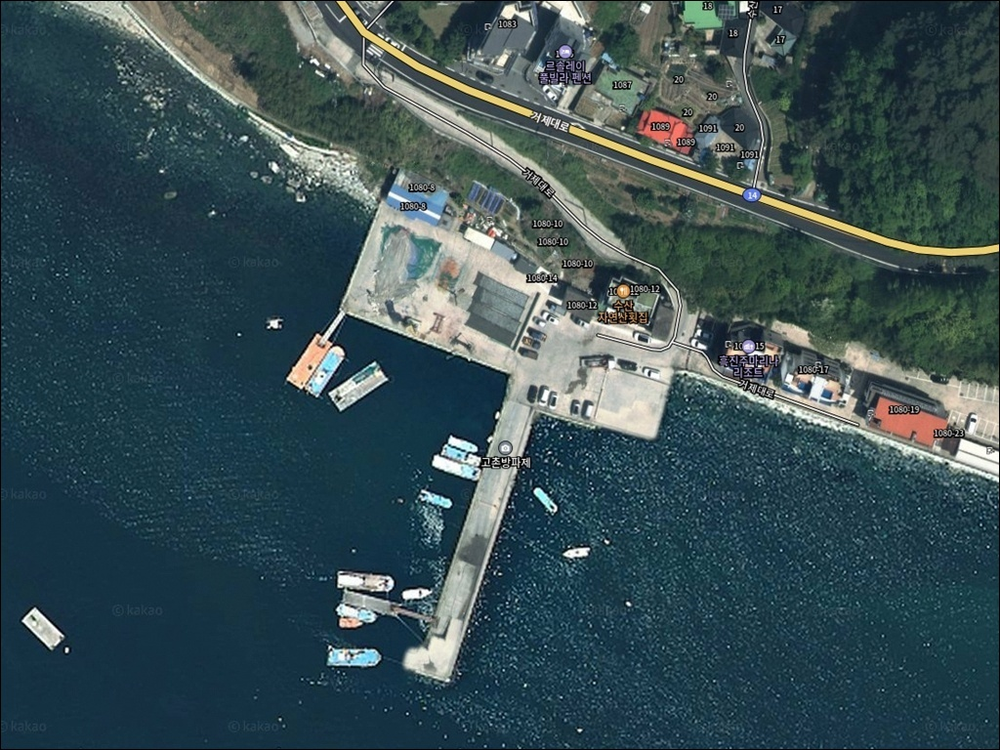
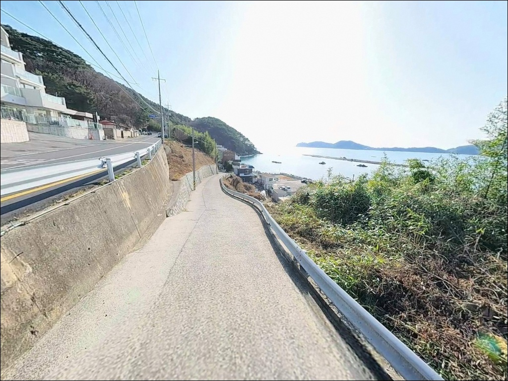
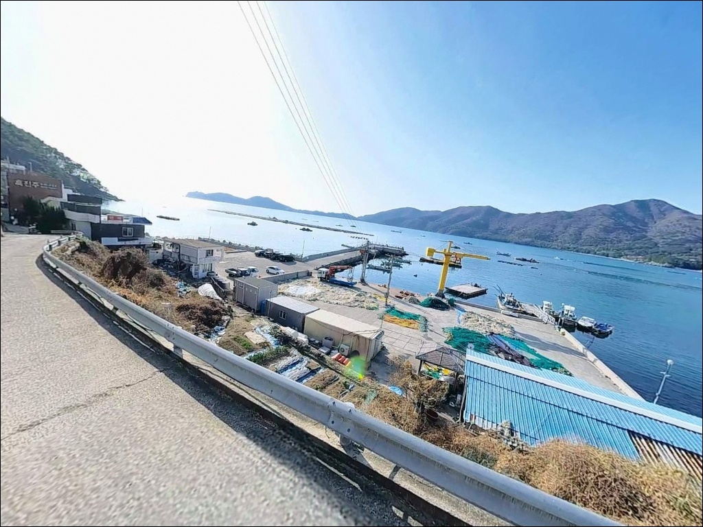
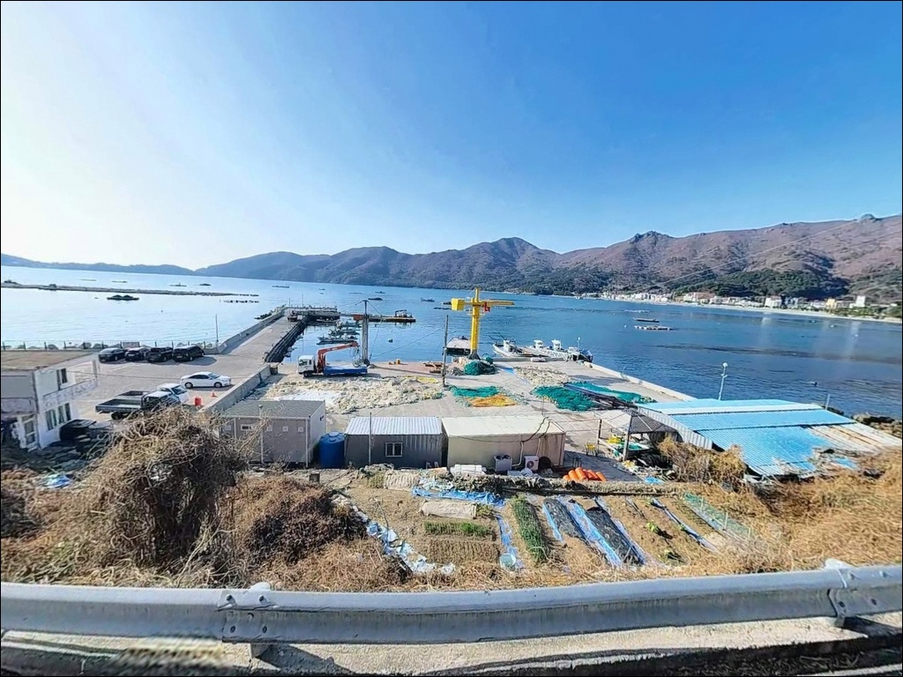
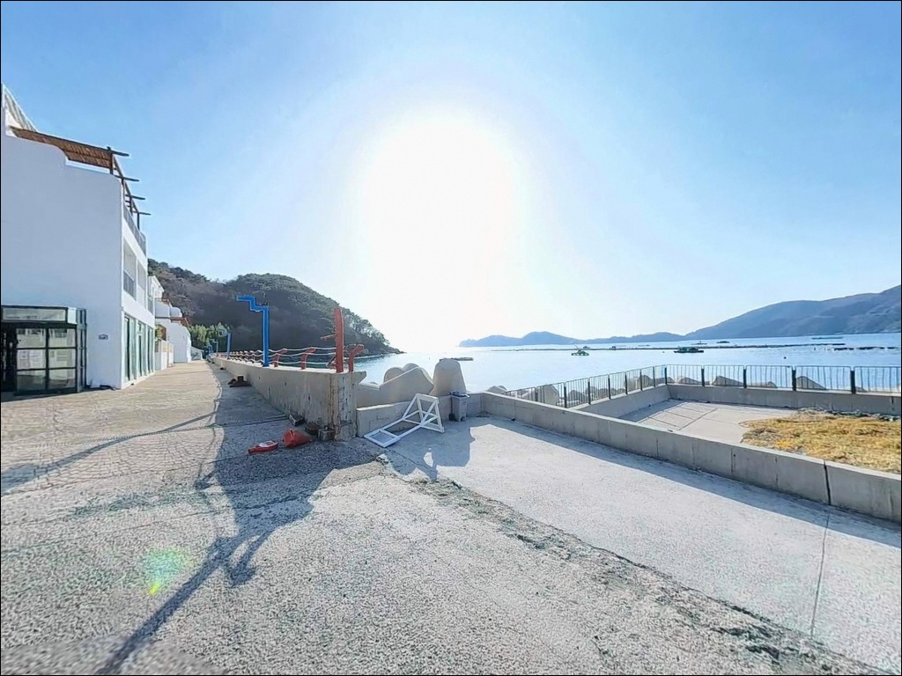
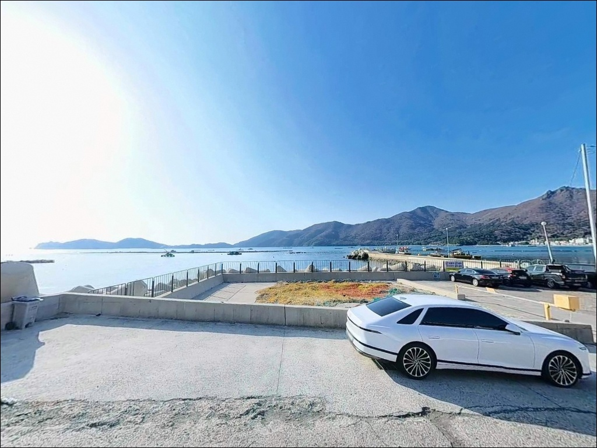
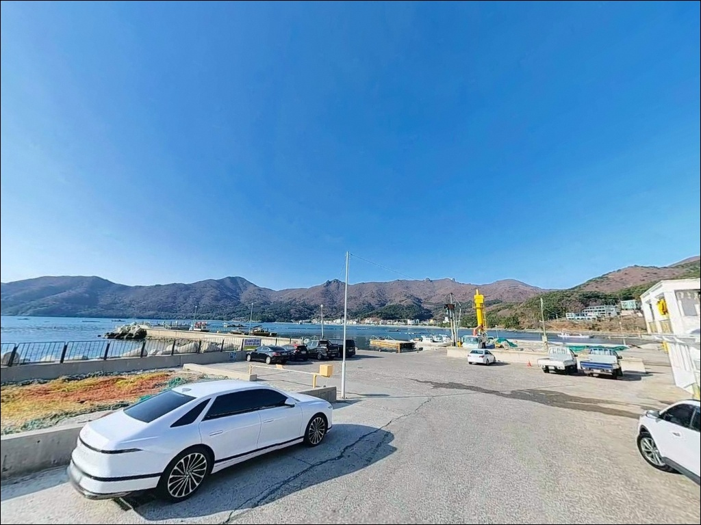
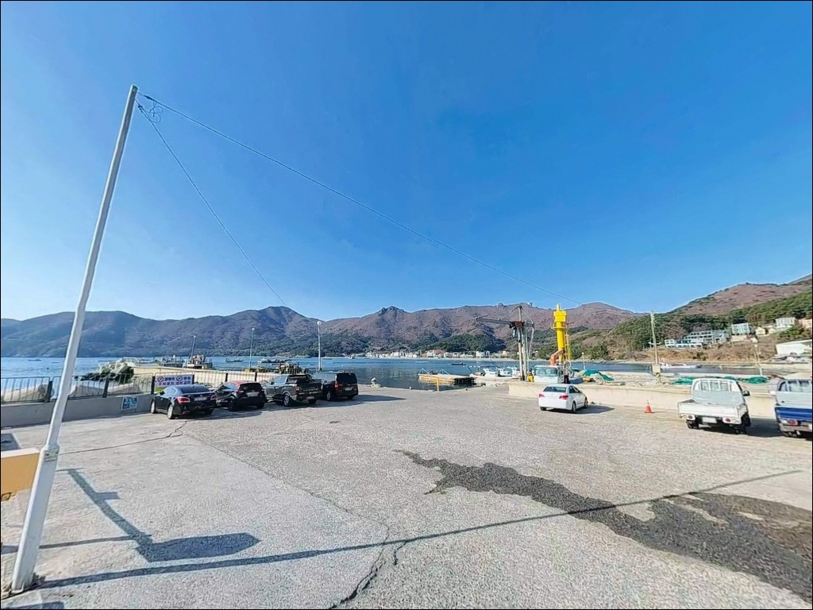
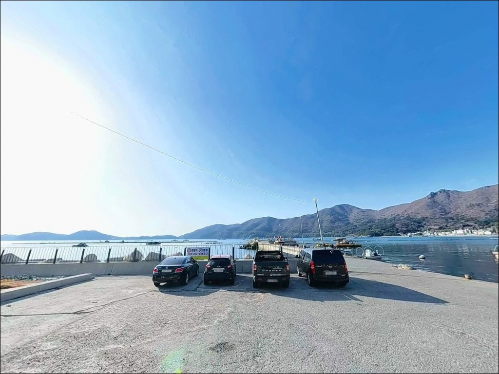

외항 7m 내항 4m, 수심 차이로 공략법 달라지는 거제 고촌방파제 낚시
이 페이지에는 광고(제휴 링크 포함)가 있으며, 광고 링크를 통해 구매하면 운영자가 판매 수익 또는 수수료를 받을 수 있습니다. 포인트 사진: 카카오맵 스카이뷰·로드뷰. 이 페이지의 지도·사진 이미지는 카카오맵의 실제 서비스 이미지와 다를 수 있습니다.


포인트 안내
고촌방파제
경남 거제시 동부면 학동리 150-1
방파제에 도착하고 나서야 외항과 내항의
수심 차이를 처음 확인하는 경우가 많습니다.
끝단 외항은 7~10m 급심이지만 내항은 4~6m 수준으로,
자리만 잘못 잡아도 채비와 낚시 방식을
처음부터 다시 꾸려야 하는 상황이 됩니다.
이 글은 고촌방파제의 외항·내항 구조와
낚시 방식별 공략 구간, 진입 동선,
한려해상국립공원 내 차박 제약을 중심으로 정리했습니다.
조황 단정이나 특정 어종 보장은
이 글의 범위에 포함되지 않습니다.

1. 진입 동선과 포인트 접근성
고촌방파제는 거제대로(해안도로)에서
학동리 방향 샛길로 빠지는 진입 구조입니다.
포장도로가 방파제 입구까지 연결되어 있으며
급경사 구간 없이 접근이 가능합니다.
방파제 노면 폭이 넓어
승용차부터 캠핑카까지 끝단 부근까지
직접 진입할 수 있는 구조입니다.
회차 공간은 방파제 입구 공터와 노면에서 확보됩니다.
대형 차량도 방향 전환에 큰 어려움이 없는 편이며,
방파제 초입 공터에도 여유 있는 주차 공간이 있습니다.
성수기에는 인근 학동 관광 차량이 몰리는 시기가 있으니
이른 시간 진입을 권하는 편입니다.
낚시 자리 바로 옆에 차량을 세울 수 있는 구조라
장비 이동 거리가 짧습니다.
채비통·아이스박스·낚싯대를 한꺼번에
내릴 수 있는 동선으로,
혼자 출조하는 경우에도 부담이 적습니다.

2. 차박 환경과 야간 체류 여건
고촌방파제는 학동 흑진주 몽돌해변과 인접한 위치로
낮에는 관광 인파가 드나드는 분위기입니다.
밤이 되면 차량 통행이 줄어들고
방파제 특유의 정적이 깔리는 편이지만,
인근 펜션 단지와 마을 생활권이 가까워
완전한 고적감을 기대하기는 어렵습니다.
항내 가로등이 구비되어 있어 야간 낚시 환경은 양호한 편입니다.
내항 쪽은 파도 영향이 적어 안정적인 야간 자리가 만들어집니다.
외항 테트라포드 구간은 야간에 낙상 위험이 있으니
구명조끼와 안전화 착용이 기본 조건입니다.
중요한 점은 이 일대가
한려해상국립공원 거제지구 내에 해당한다는 사실입니다.
국립공원 내 지정 외 장소에서는
야영·취사·불 사용이 원칙적으로 금지됩니다.
차박이 목적이라면 방파제 노면 체류가 아닌
학동자동차야영장(약 1.4km 거리, 국립공원공단 예약제)을
먼저 확인하고 예약하는 것이 원칙입니다.


3. 주변 편의시설 및 인프라 현황
고촌방파제 반경 1.5km 이내에
편의점 3곳이 확인됩니다.
이마트24 거제학동해수욕장점(약 1.4km),
CU 거제학동몽돌점(약 1.2km),
세븐일레븐 거제동부점(약 1.3km)이
학동해수욕장 일대에 분포해 있습니다.
식당과 카페도 학동몽돌해수욕장 인근에 집중되어 있어
현장에서 물품 보급에 어려움이 없는 편입니다.
방파제 인근에는 수산자연산회집이 확인됩니다.
낚시 소품이 필요하다면 출발 전 거제 시내에서
미리 챙겨오는 편이 확실합니다.
응급 상황 발생 시
거제 고현동 방면 종합병원까지 차량 약 25분 거리입니다.
출조 전 연료와 비상약품은 기본으로 갖추고
현장에 진입하는 것이 좋습니다.

4. 진입 전 반드시 챙겨야 할 준비사항
고촌방파제는 거제 남부 외해 방향으로 열린 구조라
남동풍이 강해지는 날에는 외항 쪽으로
파도가 직접 밀려드는 상황이 만들어집니다.
기상청 해상 예보를 출조 당일 아침에 다시 확인하고,
풍향과 파고가 기준을 넘으면 외항 자리를 피하는
판단이 필요합니다.
바닥이 몽돌·암반·모래 혼합형이라
끝단과 테트라포드 근처에서는 밑걸림이 잦습니다.
여분 채비를 넉넉하게 준비하는 것이 기본이며,
에깅 채비는 특히 끝단 공략 시 손실이 발생하기 쉽습니다.
에기와 리더는 여유분을 반드시 챙겨야 합니다.
마을 선착장 구조상 어선이 드나드는 공간이므로
선박 입출항 동선을 막지 않는 자리 선택이 기본 매너입니다.
야간 낚시 시에는 헤드랜턴과 구명조끼를
착용 상태로 유지하는 것이 안전의 기준입니다.
낚시 후 발생한 쓰레기는
현장에서 전량 수거해 귀가합니다.

낚시 자리 선택이 달라지는 이유 — 외항과 내항 수심 구조
고촌방파제의 핵심은 외항과 내항이
서로 다른 수심과 지형 조건을 갖추고 있다는 점입니다.
방파제 끝단 외항 쪽은 수심이 7~10m에 달하며,
거제 남부 외해와 연결되는 조류 소통이 활발한 구간입니다.
끝단은 조류가 살아나는 물돌이 타이밍에
반응이 올라오는 자리입니다.
내항은 수심 4~6m 내외로 안정적인 환경이 유지됩니다.
선박 계류 구조상 파도 영향이 적고,
바닥은 모래와 펄이 섞인 혼합 지형입니다.
도다리·보리멸·양태 계열이 기대되는 구간으로,
원투낚시 채비를 멀리 보내
바닥을 천천히 탐색하는 방식이 어울립니다.
방파제 외항 쪽 테트라포드 경계면과
양식장 인근 구간은 먹이 유입 구조가 형성되어 있어
어군 밀집 가능성이 높은 편입니다.
조류 방향과 흐름 세기를 확인한 뒤
자리를 결정하는 순서가 필요합니다.
출조 전 최신 조황은 반드시 검색해 확인하시기 바랍니다.


6. 포인트에 어울리는 낚시 스타일
외항 끝단에서 가장 잘 맞는 방식은 찌낚시입니다.
수심 7~10m 구간에서 조류 흐름을 활용해
감성돔과 벵에돔을 공략하는 전형적인 방파제 찌낚시 구조입니다.
물돌이 전후 조류 변화 구간에
수심층을 다양하게 탐색하는 방식이 유효합니다.
에깅은 방파제 전역에서 외항 방향으로 캐스팅하는 방식이 기본입니다.
무늬오징어와 갑오징어 모두 대상이 되며,
여름~가을(6~11월)이 거제 남부 해역 에깅의 중심 시즌입니다.
방파제 라인을 따라 회유 어종이 접근하는 구조라
캐스팅 방향을 다양하게 변화시키는 것이 조과에 영향을 줍니다.
야간 루어낚시는 내항 가로등 주변과
테트라포드 경계면이 중심 자리입니다.
볼락은 소형 지그헤드 채비로
경계면 주변을 천천히 탐색하는 방식이 어울립니다.
농어는 미노우 계열 루어로
방파제 주변 명암 경계를 노리는 방식이 기본입니다.
원투낚시는 내항 및 완만한 수심 구간에서 가장 안정적으로 운용됩니다.
모래·펄 혼합 바닥을 대상으로
도다리·보리멸·양태를 기대해 볼 수 있습니다.
정조 타이밍보다 조류가 흐르는 구간에서
채비를 멀리 보내 탐색하는 방식이 이 포인트에 맞습니다.

7. 대안 포인트와 플랜 B 동선
고촌방파제에서 조건이 맞지 않을 때
가장 먼저 이동할 포인트는
구조라항 방파제(약 5.3km)입니다.
진입과 주차가 안정적이고
외항 수심이 깊어 찌낚시·에깅 모두 운용 가능합니다.
내만형 구조라 파도 영향이 적어
고촌 외항에서 기상 문제가 생겼을 때
첫 번째 대안으로 유효합니다.
거제 남부 방향으로 이동하면
도장포방파제(약 7~8km)와 해금강 포인트(약 5km)가 있습니다.
해금강 방면은 거제 남부권 대표 외해형 포인트로
고촌과 같은 에깅·루어 시즌이 겹치며,
조류 영향이 더 강해 대물 대응에 유리한
지형 조건을 갖추고 있습니다.
차박 목적이라면
방파제 일대에서 직접 야영하는 방식 대신
학동자동차야영장(학동리 257-1)을 이용하는 것이 원칙입니다.
국립공원공단 예약 시스템 사전예약제로 운영되며,
전기 시설과 편의시설이 구비된 공식 캠핑장입니다.
낚시 후 귀영 동선으로는 1.4km 거리라 부담이 없습니다.

외항과 내항을 함께 쓸 수 있는 구조,
고촌방파제의 기본 조건입니다
찌낚시로 외항 끝단 수심층을 공략하거나,
야간에 내항 가로등 주변에서 루어를 던지거나,
원투 채비로 내항 바닥을 탐색하는 방식까지
한 자리에서 다양하게 운용할 수 있는 구조가
고촌방파제의 강점입니다.
외항과 내항의 수심 차이를 미리 이해하고 진입하는 것이
이 포인트를 제대로 쓰는 방법입니다.
반면 한려해상국립공원 내 위치라는 제약은
방파제 일대에서 야영·취사를 계획하는 경우
사전에 반드시 확인해야 할 조건입니다.
차박을 함께 계획한다면 학동자동차야영장 예약을
먼저 확인하고 출발 일정을 잡는 것이 순서입니다.
남동풍이 잦아든 날,
조류가 살아 있는 물돌이 타이밍에
채비를 잘 갖추고 외항 끝단에 자리를 잡는다면
거제 남부권 방파제 낚시의
기본기를 익히기에 좋은 출조가 됩니다.